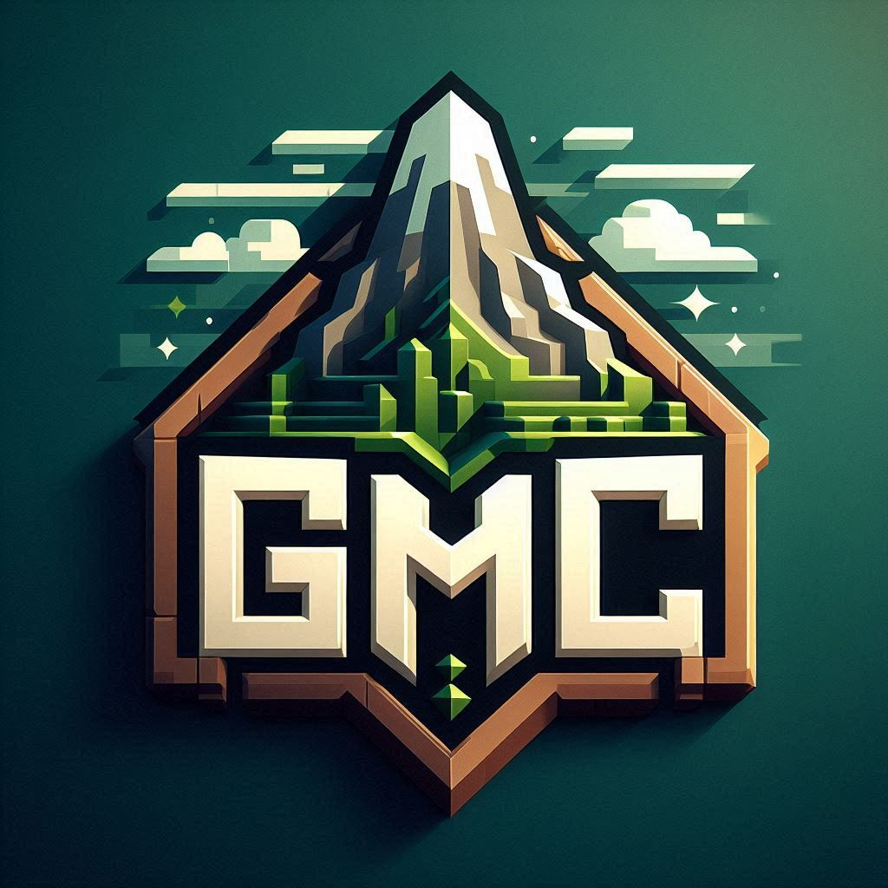

一个长期稳定的 Minecraft 多玩法社区服。这里有生电协作、养老建筑、魔改试炼、周末赛事和跨端玩家社区，进服后直接找到自己的节奏。

适合红石机器、公共设施、资源工程和玩家协作建设。
符文之地、试炼机制和新增附魔为战斗玩家提供成长路线。
建筑赛、PVP、限时奖励和称号，让社区保持活跃。
官网负责展示服务器与吸引新玩家；Wiki、规则和附魔表放在文档区，适合手机上快速查指令、读规则和找机制说明。
© 2026 GMC Server Team